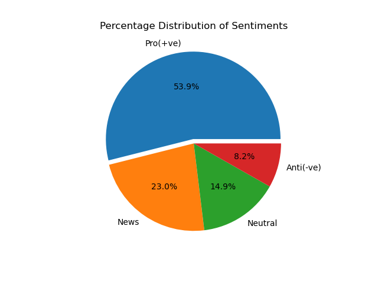
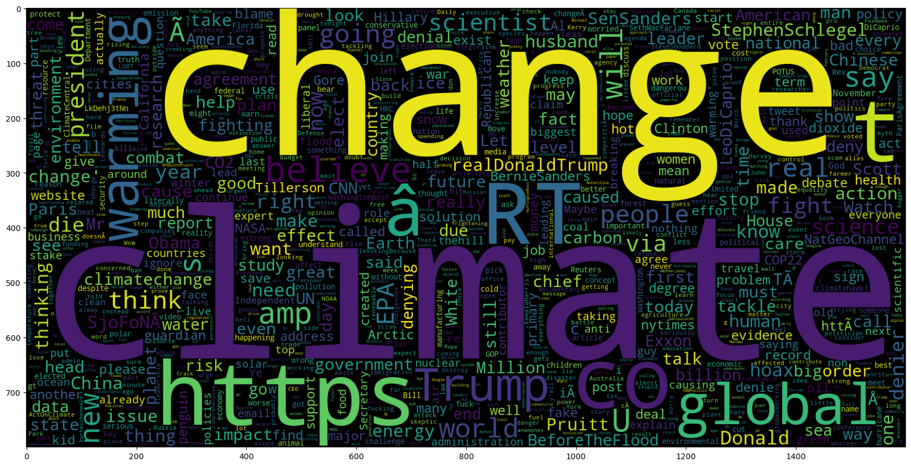

Twitter Sentiment
Classification

Project Description
In this project, we developed a sentiment analysis tool for climate-related tweets, enabling companies to gauge public perception of climate change by their tweets. By analyzing Twitter discussions, businesses can gain insights into how their products or services might be perceived in the context of climate sentiment. We investigated various supervised machine learning models, including Logistic Regression, Support Vector Machine, Naive Bayes, and Random Forest, to identify the most effective classifier for predicting climate sentiment in tweets. We employed GridSearchCV to optimize the parameters of our chosen model.
Features
This project uses a classification model to determine the sentiment of users' tweets which could either be Pro, Negative, News or Neutral. We also developed a web application using Streamlit for demonstration and easy interaction with our model. The web application was designed in a way that it will be able to take csv files and return the sentiments which would suit a use case for an organization seeking to get the sentiment analysis for a group of tweets.
Tools Used
- Python
- Streamlit
- nltk
- Sklearn
- Comet
- GitHub
Result
Having done a thorough EDA on the dataset, we visualized the amount of data we had on the given sentiments as shown in the chart below:
We also found the highest occuring words in the dataset as shown in the graph below:
Using GridSearchCV and Sklearn's pipeline class, we performed hyper parameter tunning on the Support Vector and Random forest classifiers. This allowed us to identify the best parameters for the vectorizer and the classifer as well. With an accuracy score of 0.718, our model performed fairly.
Recommendation
This project has shed light on public perceptions of climate change, providing valuable insights for businesses. By harnessing machine learning techniques, we were able to extract actionable insights that can guide companies' market research and strategic decisions. Here are key takeaways from this endeavor:
- Market Research Insights: This project offers valuable market research insights for businesses. By accurately classifying individuals' beliefs on climate change, companies gain access to a broad spectrum of consumer sentiment. This data can inform their marketing strategies, helping them develop products and services that align with customers' environmental concerns and increase their market share.
- Competitive Advantage: Our project provides a competitive edge for companies in the growing market of environmentally friendly and sustainable products. By leveraging machine learning techniques, we help businesses stay ahead of their competitors by understanding consumer perceptions and preferences in real-time. This enables them to tailor their offerings, attracting a growing segment of environmentally conscious consumers.
- Public Awareness and Concern: Our analysis reveals a significant portion of individuals expressing strong beliefs in climate change and its potential impacts. This heightened awareness underscores the urgency for businesses to incorporate sustainability and environmental consciousness into their offerings.
Note
Twitter as at the time of writing is known as X.